Windows
Windows 10 et 11 · 64 bits
Installateur avec raccourcis sur le Bureau et dans le menu Démarrer.
Gratuit · Sans compte · NF C 15-100
ÉlectriCAD génère le plan, place prises et interrupteurs selon la norme, calcule le tableau et simule chaque disjoncteur — en 2D comme en 3D, dans le navigateur ou en application hors ligne.
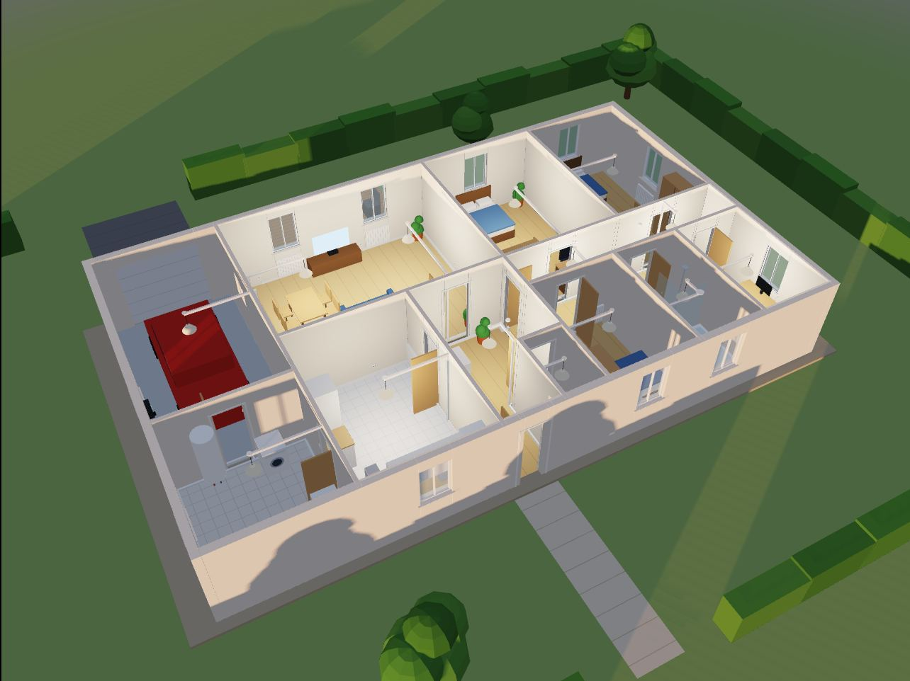
Plan
Du studio à la maison à étage : choisissez un type, importez le plan d’architecte en DXF, ou décalquez celui de votre maison. Le reste se place tout seul.
Générer une maison dans l’éditeur · Importer un plan d’architecte (DXF) · Décalquer mon plan
Norme
Nombre de prises selon la surface, éclairage et commande dans chaque pièce, détecteurs de fumée, GTL : le rapport se met à jour à chaque modification.
| Pièce | Surface | Prises | Éclairage | Statut |
|---|---|---|---|---|
| Génération de la maison… | ||||
Tableau & physique
Circuits, sections, différentiels 30 mA et abonnement sont calculés. Puis la simulation fait chauffer les disjoncteurs, détecte les courts-circuits et les fuites à la terre — et une journée type fait défiler repas, lessive, chauffage et heures creuses, kWh et euros à la clé, jusqu’au bilan annuel abonnement compris et aux économies d’une pompe à chaleur ou d’un chauffe-eau thermodynamique.
Branchez des appareils sur une ligne et regardez le disjoncteur réagir.
—
Modèle thermique du premier ordre (τ = 120 s, déclenchement à 1,13 In), déclenchement magnétique à 10 In, câble cuivre. Temps accéléré ×20.
Le tableau se modifie circuit par circuit, en monophasé ou en triphasé, avec ou sans plan — et tous les folios suivent, prêts à imprimer ou à ouvrir dans AutoCAD (DXF).
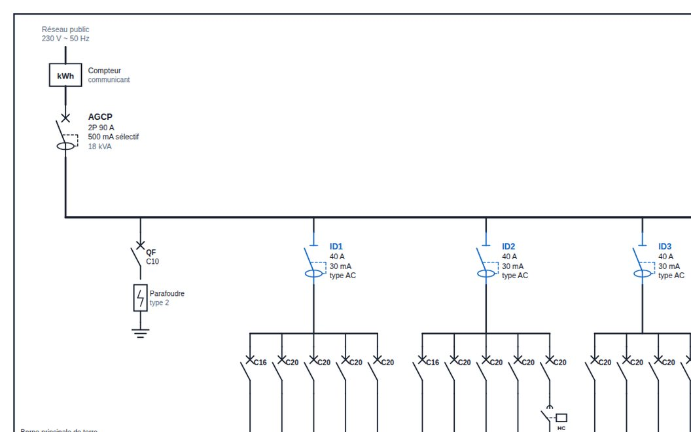
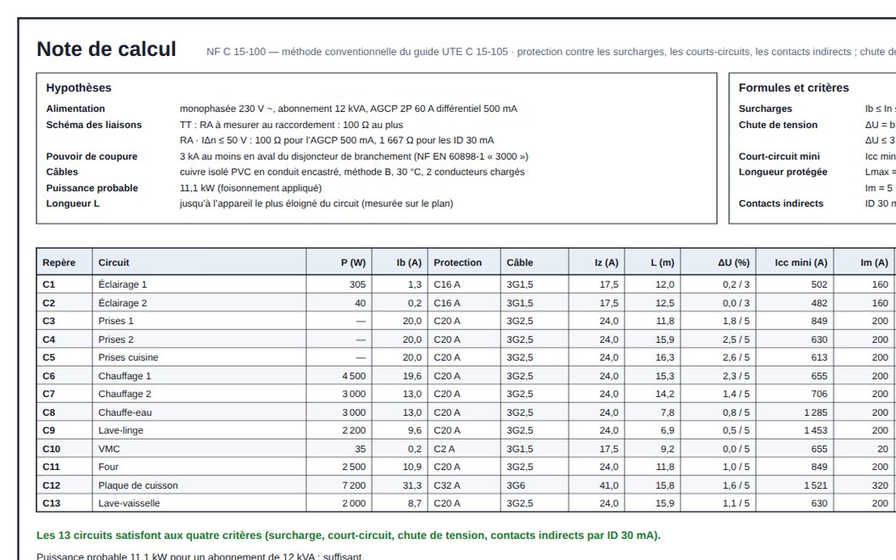
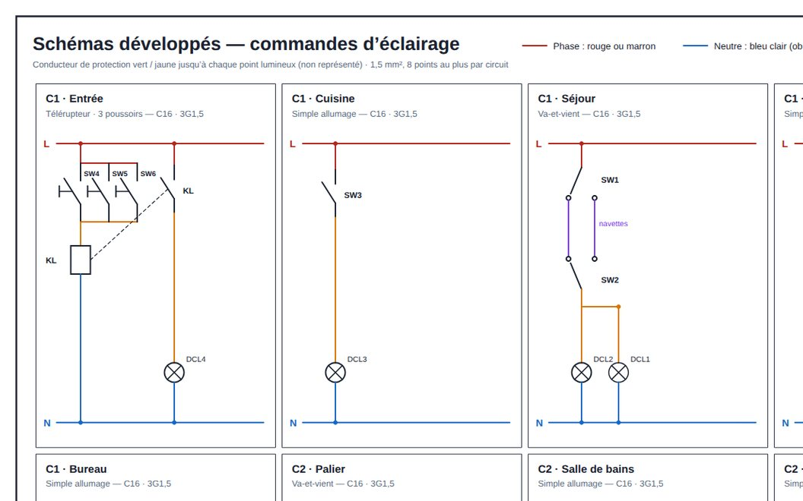
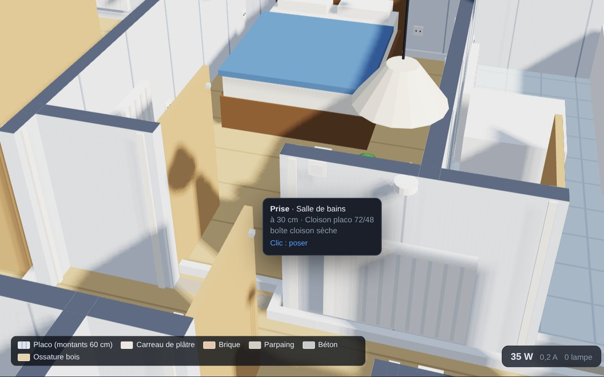
Visite 3D
Un moteur WebGL écrit pour ÉlectriCAD : ombres du soleil, heure du jour, lampes qui éclairent leur pièce, carte des lux, visite à hauteur d’yeux jusqu’à l’étage, rayons X sur les câbles et vue en coupe.
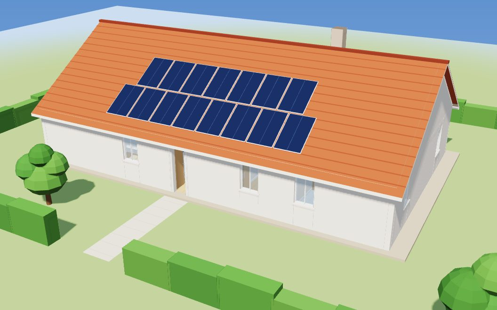
.glb.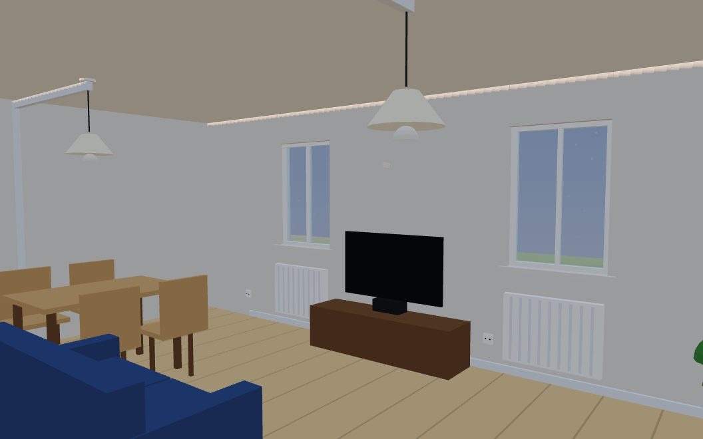
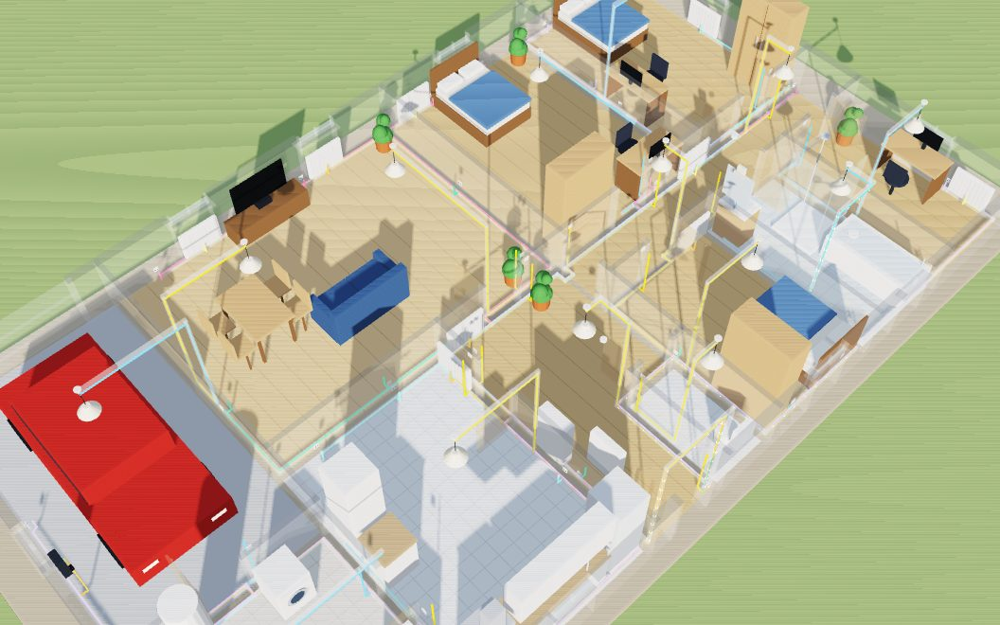
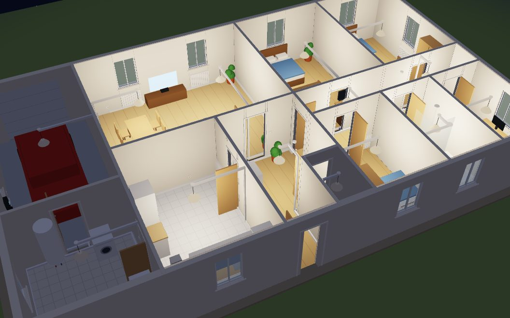
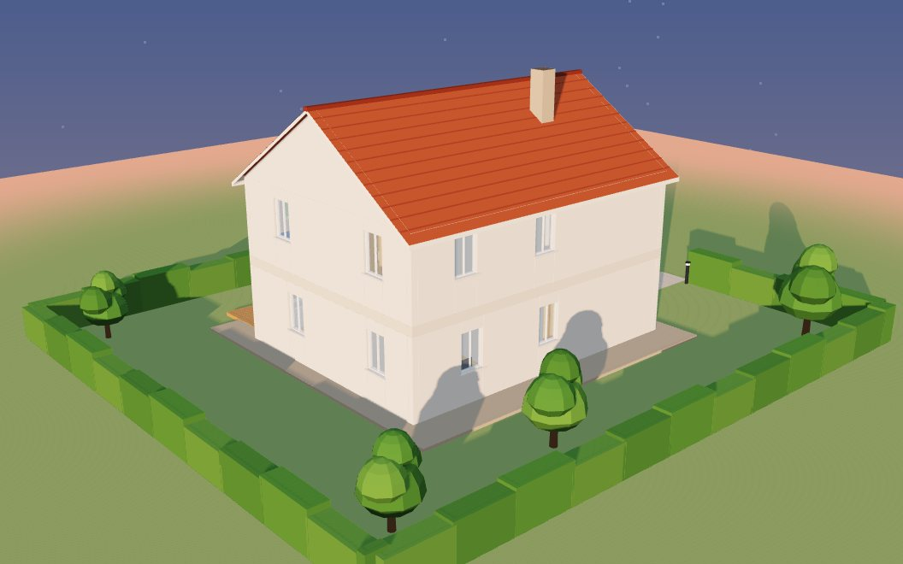
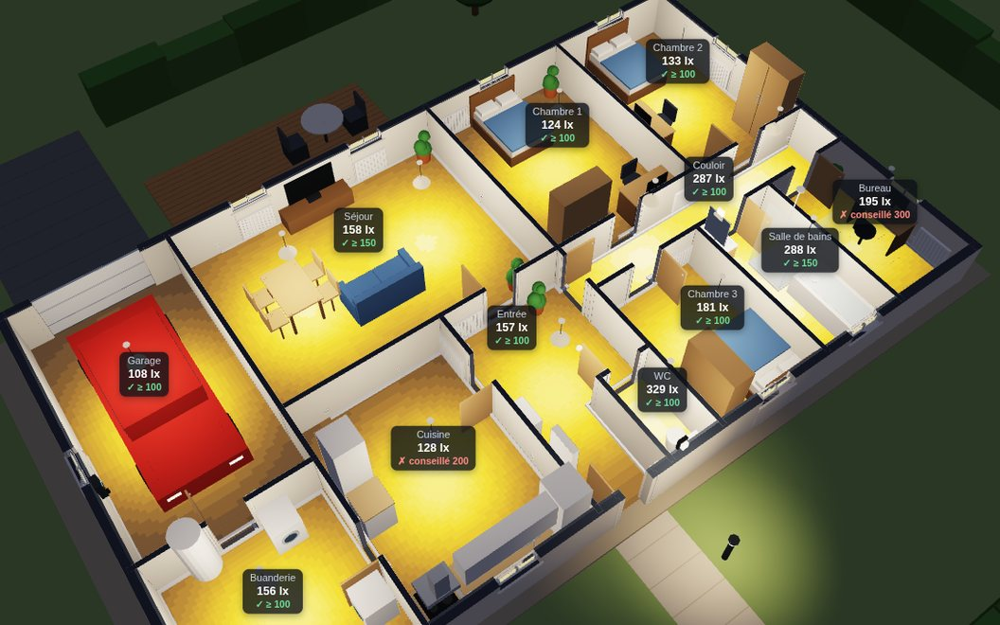
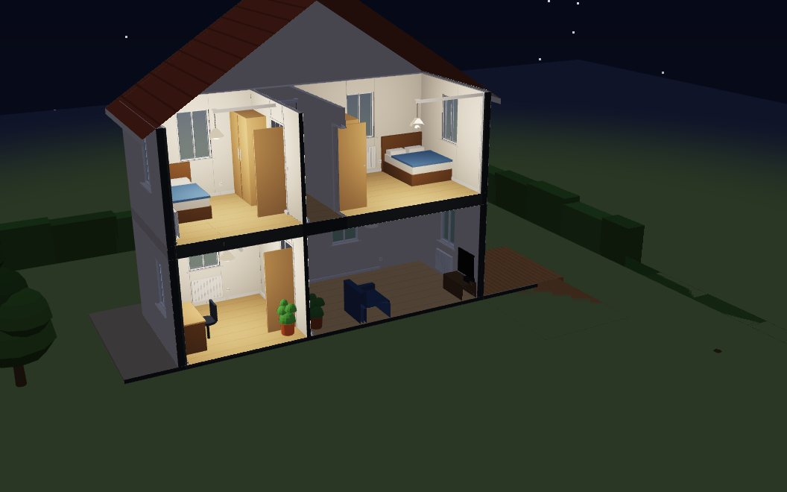
Lancer la visite de la maison T5 · Monter à l’étage de la maison R+1
Électronique
Le même éditeur dessine des schémas CEI et les simule : continu non linéaire, transitoire, Bode, logique. Tensions et courants s’affichent sur les fils.
| Schéma | Niveau | Simulation | Ouvrir |
|---|
Gratuit, sans compte et entièrement hors ligne : vos plans restent sur votre machine.
Windows 10 et 11 · 64 bits
Installateur avec raccourcis sur le Bureau et dans le menu Démarrer.
macOS 12 ou plus récent
Puce Apple : Mac M1 et suivants. Ouvrez le .dmg, puis glissez ÉlectriCAD dans Applications.
64 bits · Ubuntu, Debian, Fedora…
AppImage : toutes distributions — rendez le fichier exécutable, puis double-cliquez.
Téléphones et tablettes · Android 7 ou plus
Autorisez l’installation d’applications inconnues, puis ouvrez le fichier.
Application web, sur l’écran d’accueil
Chrome, Edge, Firefox, Safari · rien à installer
Chrome et Edge : icône « Installer » dans la barre d’adresse.
C’est normal : les applications ne sont pas signées avec un certificat payant. Le code source est public.
« Windows a protégé votre ordinateur » → Informations complémentaires → Exécuter quand même.
Réglages Système → Confidentialité et sécurité → Ouvrir quand même. En dernier recours : xattr -cr /Applications/ElectriCAD.app
Propriétés du fichier → Autoriser l’exécution, ou chmod +x ElectriCAD-Linux.AppImage. Le .deb s’installe avec sudo apt install ./ElectriCAD-Linux.deb.
Réglages → Sécurité → Installer des applications inconnues : autorisez votre navigateur, puis ouvrez l’APK.
Oui : pas de compte, pas de publicité, pas d’abonnement. Le code source est public sous licence MIT.
Sur votre appareil uniquement : sauvegarde automatique dans le navigateur ou dans l’application, et export en fichier .json, PNG, SVG, DXF (AutoCAD) ou PDF. Rien n’est envoyé sur Internet.
Non. C’est un contrôle simplifié pour apprendre et préparer un projet. Pour une installation réelle, faites appel à un électricien qualifié ; l’attestation de conformité est délivrée par le Consuel.
Oui : importez le plan d’architecte en DXF (AutoCAD, LibreCAD, ArchiCAD…) — murs, portes, fenêtres et noms des pièces sont repris —, décalquez une photo ou un scan du plan, ou dessinez les murs vous-même. ÉlectriCAD calcule les surfaces, meuble les pièces vides, implante l’appareillage et trace les goulottes. Essayer avec un plan d’exemple.
Oui : pincer pour zoomer, deux doigts pour déplacer, tiroirs pour la palette et les propriétés, joystick pour la visite 3D. Application Android à télécharger ; sur iPhone et iPad, ajoutez le site à l’écran d’accueil.
Non. Une fois le site chargé, ou avec l’application installée, tout fonctionne hors ligne : génération, simulation et 3D.
Choisissez un type, et ÉlectriCAD dessine tout le reste.